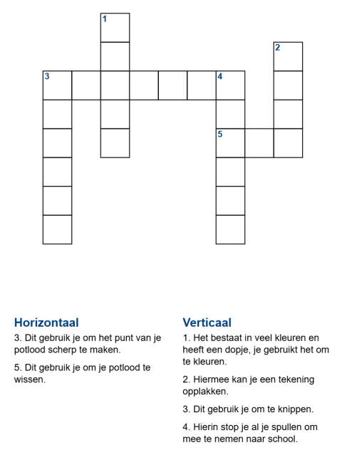
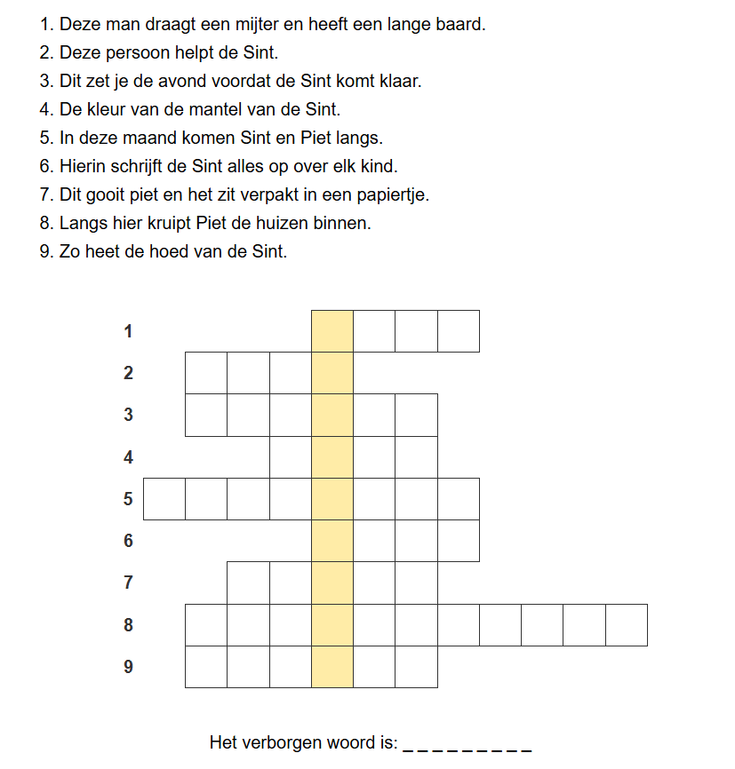

Kies een puzzeltype, vul je woorden in en maak meteen een werkblad.

Klassieke kruiswoordpuzzel
Woorden kruisen horizontaal en verticaal.
Verborgen woord
Ontdek het geheime woord met omschrijvingen.Vul links de gegevens in om een werkblad te genereren.